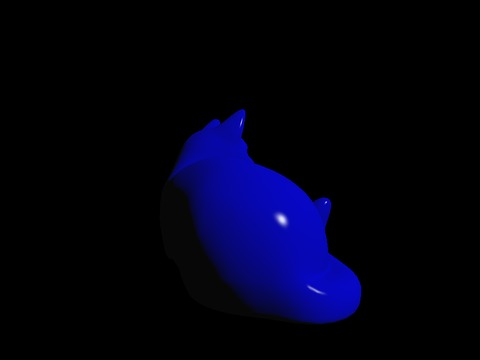
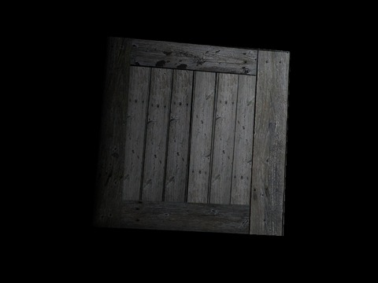
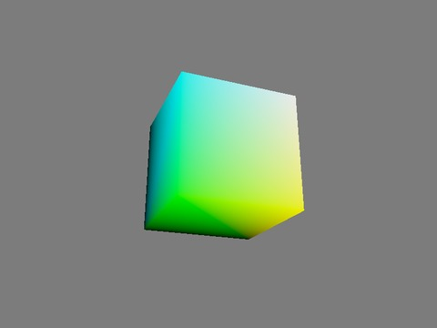
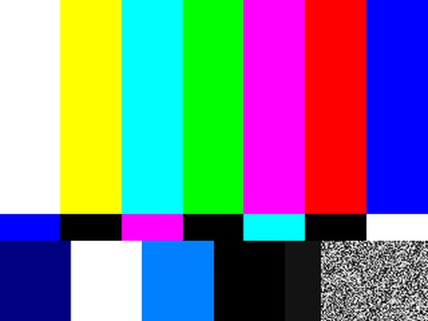

vkmark, 7 scenesrevision ab6e6f3 · 5 causes · patch +135/−58 lines in 18 files
1,124→0 timing diagnostics

shading
269→0

texture
269→0

vertex
269→0

desktop
114→0
clear
108→0

cube
57→0
effect2d
38→0
SDL3 sprite test
revision e4af6f8e; the race of Figure 1, which validation does not report
166→0
patch: one set of vertex buffers per frame in flight (+38/−18)

GStreamer, 5 pipelines
gst-plugins-bad 1.24.2, each ending in vulkansink
495→0
patch: two one-line changes

Dear ImGui, 2 examples
Vulkan backend, revision 9d9a621f
40→0
patch: remove one submission (−75)
VKMARK-PSR present semaphore re-signalled too early
VKMARK-ACQ acquire semaphore reused too early
VKMARK-UBO host rewrites a uniform buffer in use
VKMARK-CLR clear not chained to the acquire wait
VKMARK-DEPTH depth image shared, colour-only sync
GST-WAIT acquire wait at bottom of pipe blocks nothing
GST-IA image made visible to the wrong reads
IMGUI-PRE swapchain images transitioned before acquire
SDL-1 host rewrites vertex buffers in use
After the patches, all 15 programs: no synchronization diagnostic in either capture mode, no synchronization-validation message,
no model warning, and guarantee-eligible in the verified configuration; re-tracing each three more times gives the same result.
Fig. (preview)